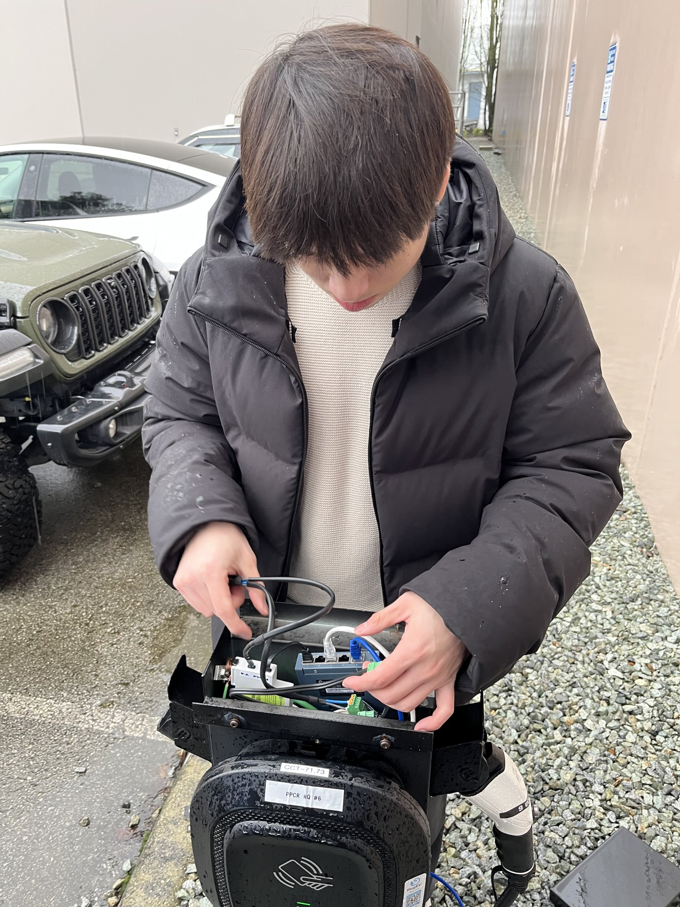
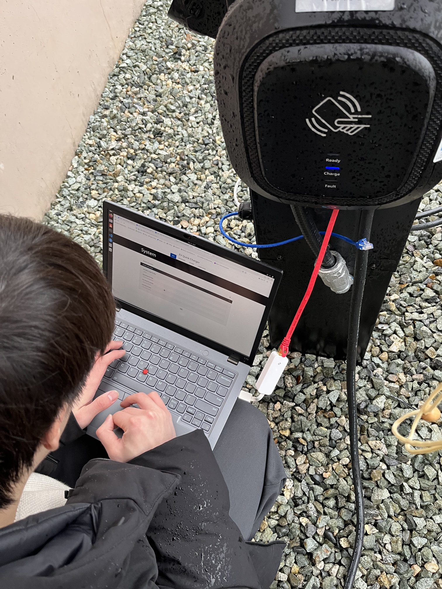
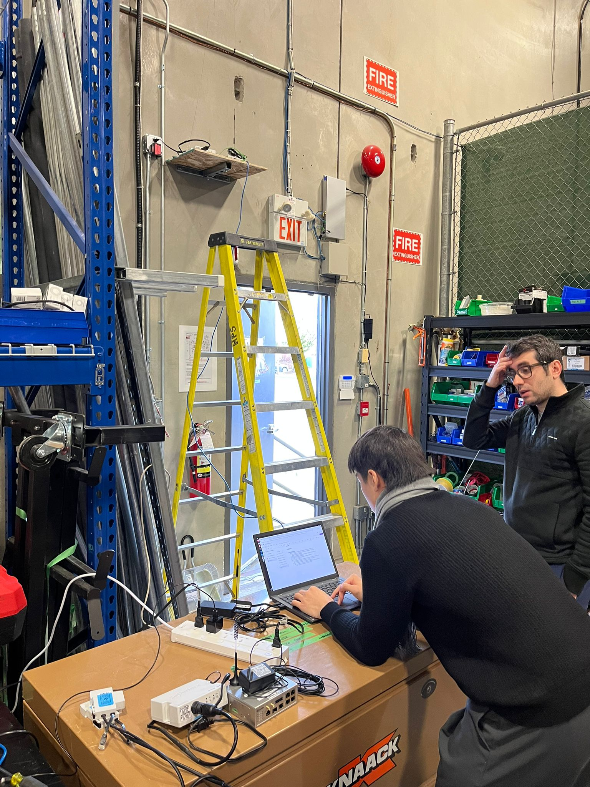
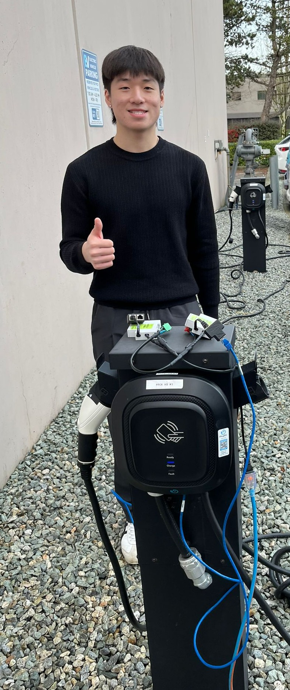
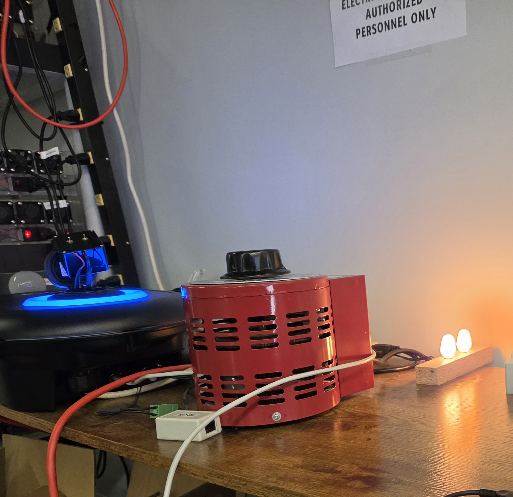
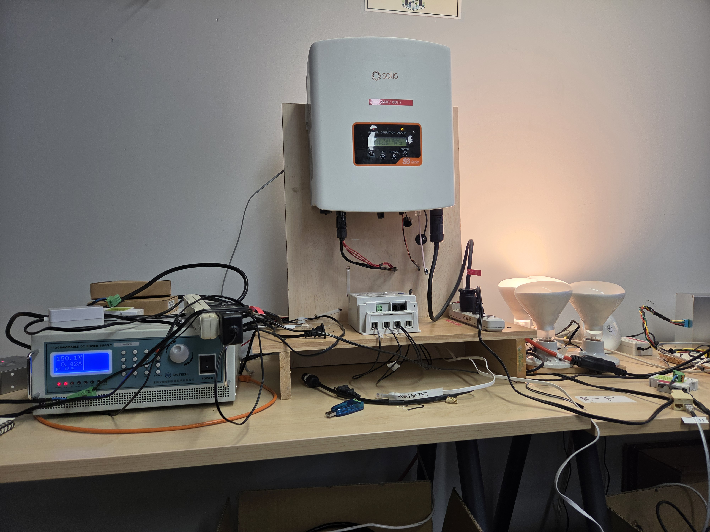

Key Skills:
- Firmware: C/C++, Embedded Debugging (JTAG, GDB), FreeRTOS, Memory Management, Concurrent Programming
- Embedded Systems: Linux, SPI, UART, Python Test Automation, Shell Scripting, littleFS
- Networking: TCP/IP, Wireshark, lwIP, OCPP, LTE Networking, Modbus RTU/TCP
- Hardware: PCB Design (Altium), Hardware Validation, Compliance Testing
Responsibilities:
- Embedded Firmware: My work in development focused on hardening the embedded Telnet shell by implementing a static ring buffer to optimize the logging system and improving task synchronization for external commands. I also developed a JTAG-based firmware flashing utility over SPI and gained experience with embedded architecture, including FreeRTOS task handling, the lwIP networking stack, and littleFS for storing firmware images. I also investigated embedded firmware bugs using JTAG and GDB to identify root causes, implement fixes, and submit production-ready pull requests.
- Networking & Test Automation: I worked extensively with embedded networking technologies, debugging TCP/IP communication using Wireshark and analyzing protocol behavior across OCPP and Modbus RTU/TCP for substation meters, EV chargers, PV inverters, and heat pumps. I also designed an automated Python-based OCPP simulator to evaluate energy management system responses under varying power consumption and generation scenarios.
- Hardware & Validation: I helped install the first BPL device in North America, connecting smart grid communication with EV charging. I also designed an optical port converter PCB in Altium Designer, recovered embedded devices using UART bootloader flashing via Minicom, and reviewed technical documentation to support product submission for utility providers such as BC Hydro.






Company Background: Corinex is a global smart grid technology company that develops Broadband over Power Line (BPL) communication systems. Its products help utilities monitor, manage, and modernize electrical distribution networks while supporting applications such as smart meters, EV charging infrastructure, and grid automation.
Confidentiality Notice: Some technical details and images have been omitted or generalized to comply with company confidentiality requirements.